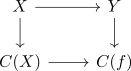

long exact sequence of homotopy groups for a homotopy cofibration sequence
Proposition
Let

be the homotopy cofibration sequence.
Assume that $f$ is n-connected and $X$ an m-connected space.
Then the induced map
\begin{align*}
X & \mathrm{hofib}(Y \rightarrow C(f))
\end{align*}
is $(n + m - 1)$ connected and generates the long exact sequence

Proof
connectedness
follows from the homotopy excision theorem for CW complexes for

where $X \rightarrow C(X)$ is m connected (cf. connectivity of the cone inclusion)